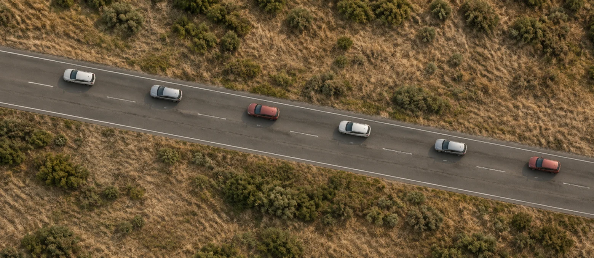

1台が少し減速
車が同じ速度で走っているところで、1台が少し速度を落とします。これが波のきっかけです。
事故も工事もない高速道路で、1台が減速したら？ 車間を変えて、自然渋滞が生まれる瞬間を見てみよう。

枠で囲んだ車が一度だけブレーキをかけます。すぐ後ろの車のブレーキランプに注目しましょう。
初めの速度より 4 km/h 以上遅くなったことのある後続車
18秒後の比較
車が同じ速度で走っているところで、1台が少し速度を落とします。これが波のきっかけです。
減速に気づくまでの間に、前の車との距離が縮まります。車間に余裕がなければ、間隔を取り戻そうと前の車より強くブレーキをかけることがあります。
先に減速した車が前へ抜けても、次の車が後ろから加わります。こうして低速のかたまりが、車とは逆向きに進みます。